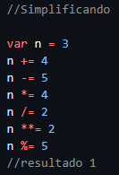
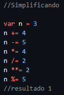

A variável é um local de armazenamento para dados, que pode ser alterado conforme solicitado. Segue exemplo de como validar se o comando armazenou corretamente
Como utilizar alguns comandos como "Number" para que os dados coletados sejam todos números. Segue exemplo com os comandos como Length, toUpperCase() e toLowerCase() e outros. Sempre lembre que quase todos eles têm que ser conforme estão no exemplo.
Com a nova versão do JS, é possível concatenar colocando `` e no meio da frase como ${}. É uma forma de como trocar o ponto pela vírgula, igual utilizamos no Brasil, e colocar o R$ na frente.

Temos alguns operadores no JS como: + (soma), - (subtração), * (multiplicação), / (divisão), % (não é porcentagem, mas sim divisão real, que é a sobra da divisão sem usar o ponto, e sim a sobra dela) e ** (potência).
Ordem de precedência: () primeiro, ** segundo, * / % todos esses 3 têm a mesma precedência. Se os 3 aparecerem na mesma conta, você faz da esquerda para a direita, e depois + e -.

 


Agora, na segunda parte, estamos vendo os operadores relacionais. Nesse caso, todos os resultados são verdadeiro ou falso. Começando com "<" que é o sinal de menor e o outro de maior ">", >= (maior ou igual), <= (menor ou igual), == (igual) e != (diferente).
A identidade pode validar se o valor é o mesmo == e se eles são do mesmo tipo ===.
No lógicos, temos o operador de negação !, que representa uma coisa não verdadeira ou falsa. No caso da conjunção &&, para ser verdadeiro, os dois resultados devem ser iguais. Tudo além disso é falso. E a disjunção ||, que precisa de um resultado verdadeiro para ser true.
É um operador que faz um teste e mostra um resultado conforme você "teste ? true : false".
DOM é o modelo de orientação de objetos.
Esses são alguns seletores por Marca, ID, Nome, Classe e Seletor.
Os eventos e tudo aquilo que podemos realizar dentro de um elemento, como o mouse entra na div, clica ou ate mesmo quando sai
Esse eventos são colocando com a "function" que pode ser dentro de HTML ou colocar uma escuta para que o js saiba o momento do evento.
Essas são as principais maneiras de lidar com condições em JavaScript. Elas permitem que você escreva código dinâmico e responsivo, reagindo a diferentes estados e entradas que são: